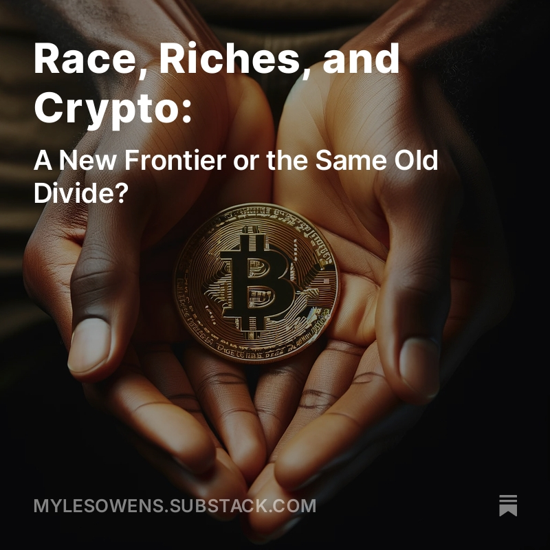

Featured Work
Interactive Visualisations
I create visualizations that explore relationships in data, such as the correlation between Bitcoin price and energy consumption over time.
Unstructured Data
Using Python, I've created algorithms to scrape and analyze unstructured data, including a visualization of US presidents' ages throughout history.
Geographic Data
I work with geographic data to create meaningful visualizations, such as mapping population data for Kyrgyzstan's subregions.
Policy Pulse
I write about complex policy topics on my blog, including pieces like "Race, Riches and Crypto" which explores cryptocurrency's role in financial inclusion.
